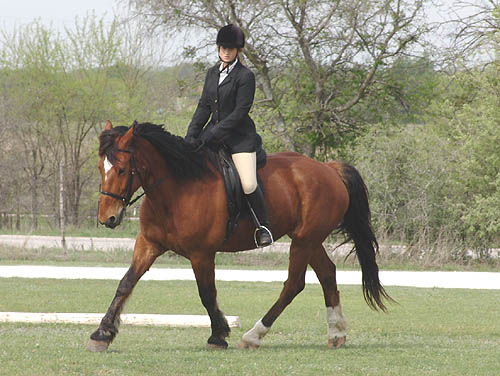

Bob Showing Dressage Lydia rode Bob in Intro 2. She hadn't
ridden him in
quite a while, so I was a little concerned
about having
her ask for a canter. They warmed up and
got to know each
other. I don't think they they ever connected
on how to really stop, and
unfortunately Lydia found the canter button
in the middle of their
walk/trot test. Still, they got a third
in the class and I got to see what
I need to work on for training horses
that other people will ride.
For better or worse, it seems like I train
them to want fewer pounds in the
rein, and longer reins to show more length
of neck. It feels to me, and I guess
my horses, like I don't really use the
reins for much. Just a feel of the mouth,
but legs and body for stopping and turning
and slowing down and speeding up.
Some rein to soften in a bend and even
a little more right now as we work on
lateral stuff. Now that Bob is fairly
rhythmic and steady, I really don't use the reins
for speed that much. I guess as we start
to work more on engagement I'll start
to feel more in the reins. But, I'll be
putting more leg on first and see where we need
to go from there...
(Click here for me showing
Bob)
Lydia's not used to such a large
and heavy type horse. For one thing his trot feels huge, and she didn't
realize that for all that he's used to a much softer rein. I think some
of the time, he used shortening of the reins to just lean...

With her shortening the reins,
she had to add more leg. At one point, Bob figured that maybe she was just
asking for a canter (but it was a nice calm transition and looked like
a decent canter in their trot circle)...
After the canter, she said she
thought whatever, and just gave him more rein and they looked more relaxed.
Stretchy walk. I think this
goes back to the impulsion thing. A little more push and his nose would
go out.
Coming up center line. I think
she's wondering how she's going to stop him in time...
It ended up being a very nice
halt. He was glad to have his head back and stopped right when she asked.